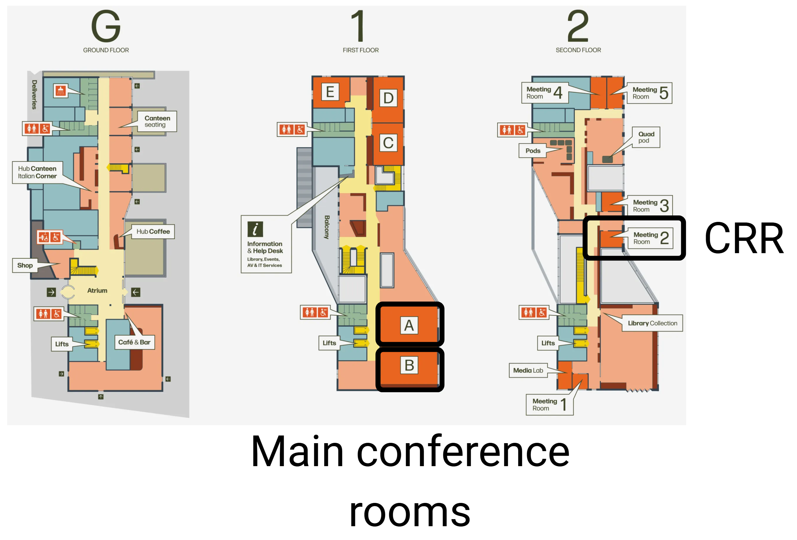

Programme
All events will take place in the West Hub. Scroll to the bottom of the page for more information.
Thursday 3rd September
| Time | Session/Activity | Room |
|---|---|---|
| 8:30 | Registration opens (until 12:00) | |
| 9:00 | Doctoral consortium session 1 | FW09* |
| RIPPA | Room A | |
| Critical research review | Meeting room 2 | |
| 10:30 | Coffee for all | |
| 10:45 | Doctoral consortium session 2 | FW09* |
| RIPPA | Room A | |
| Critical research review | Meeting room 2 | |
| 12:00 | Conference opening (general chairs) | Room A |
| 12:10 |
Keynote: Learning AI Fundamentals
Professor Alan Blackwell (University of Cambridge, UK) |
Room A |
| 13:00 | Lunch | |
| 13:45 | How UKICER works (programme chairs) | Room A |
| 13:50 |
Paper session 1: New approaches to common challenges
|
Room A |
| 15:20 | Poster lightning talks (1 minute each) | Room A |
| 15:40 | Coffee and posters | Room B |
| 16:10 | Doctoral consortium presentations | Room A |
| 16:20 |
Paper session 2: Looking though students' eyes
|
Room A |
| 19:00 | Conference dinner | Magdalene college |
Friday 4th September
| Time | Session/Activity | Room |
|---|---|---|
| 8:30 | Registration | |
| 9:00 |
Paper session 3: Taking a teachers POV
|
Room A |
| 10:30 | Coffee and posters | Room B |
| 11:00 |
Paper session 4: Examining attitudes and outcomes
|
Room A |
| 12:15 | UKICER 2027 announcement | Room A |
| 12:20 | Lunch and posters | Room B |
| 13:00 |
Workshop 1: The Best of Both Worlds—Beyond Unplugged
Annika Vielsack (Karlsruhe Institute of Technology, Germany), Beatrice Deutschmann (unaffiliated) |
Room A/B (to be confirmed) |
|
Workshop 2: What is a "Good" Honours Project in Computing?
Mark Zarb (Robert Gordon University, UK), Steve Riddle (Newcastle University, UK) |
Room A/B (to be confirmed) | |
| Doctoral consortium session 3 | FW09* | |
| 14:30 | Coffee | |
| 15:00 | Closing remarks | Room A |
| 15:15 | Conference close | Room A |
*The doctorial consortium will take place at the Department of Computer Science and Technology, which is across the road from the West Hub.
West Hub Map
